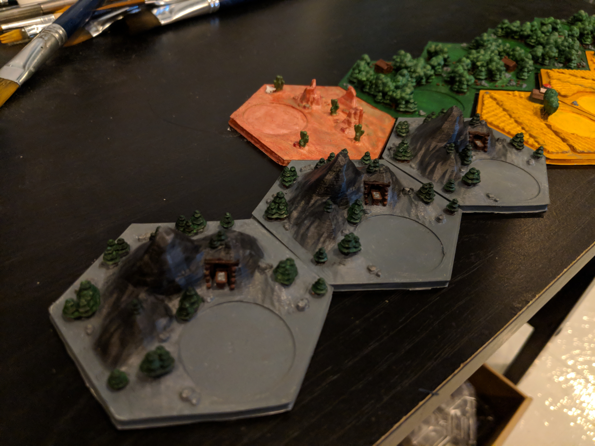

First, I'm building a quick image gallery using JS and heres some nice pics as I wait for paint to dry :P (will paginate later)

1/23/2018 First print! Guess which tile?

Still printing..
Its like 2 rax barracks pumping out 4 Marines
Look at the detail on the desert, the grooves/lines creating texture. The cactuses look so great too!
Base coat was done. I did not have "desert" color paint so I just used a mix of Metallic Red and Brown
Top Coat Matte will help dull out the colors so it does not look metallic
I plan to top coat everything all-together

I applied weathering here using the Tamiya Weathering kits.
I think the weathering kits are awesome, really brings out the detail for all the grooves and lines in your model

Primed and ready!

I was super excited about the details at the barn and the Sheep/Wheat at in-front of the barn

Look at the detail on the Wheat fields!

Here's Lumber printing, you can see the stringy artifacts.
I plucked out these artifacts
Growing trees
Fast forward... these were my steps
- Remove artifacts using a X-acto Knife and Tweezers
- Wash in soap and water, 5% 95% respectively
- Prime with White and let it dry for a day. Priming helps the plastic adhere to the paint.
- Paint with a base coat of Green
- Paint the tree trunks and stumps Brown
- Paint the rocks Grey

I applied a layer of lighter Green (Mixed Military green with white). I will go over this with the green to give it some texture

The Wheat tiles were a bit tricky, and funny. I started painting the base coat of these tiles as Brown but later I decided to do Light green.
Then I really couldn't recall what What fields look like so I went to Google. After some thought, I wanted to keep the real color of the
similar to what the cards are. So I mixed some Brown and Yellow to get this darker yellow. Then I painted the wheat tops with yellow. It actually turned out pretty well because it gives the house a nice mini lawn and some grass growing around the trees. I later added on rocks and details to the houses and piles of wheat. Then I added some wheathering to get some detail on the "rise" or sides of the wheat fields.


This was before I went back and layered green on the lumber

I applied a base coat of Grey. Painted the trunks Brown.Then painted the trees Green.
I added a paint mask to the little cart so I could paint the wooden supports without geting paint on the cart.
Ta da!
I added some detail to the cart
"Three's a party!" -Tommy Wiseau

The white didnt turn out so well, I think it was because there was another layer of paint below it and the brush itself was not great at painting and was better at detailing. I went over it a few more times later. Added some unique details to every house and silo top. I didn't want to add too much detail to distract players

I definitely went over the rocks later
can u imagine?
Here is the Wheat tile, some extensive detail work here. (the rock was redone later..)
Used the Tamiya Weathering kit to add some Mud weathering to the high rises of the Wheat
I used the gunk oil wash technique on the Ore mountains. I actually kind of liked it when the mountains were black so I rubbed the oil out and then applied it again to get some texture.
Added Gun-metal weathering to make it sparkly.
A good guide on gunk-oil wash is Here This is really how Star Wars and other Sci-Fi movies quickly make set props for space battles. Quick steps below:
- Plop some oil paint on some magazine paper. The plastic finish on magazine paper helps dry it out and get some of the sesame oil out. I let it sit like this for 24hrs
- You apply oil paint with a brush (that you don't care about), dry brushing is the best for this
- Wipe area down using a microfiber cloth, use your fingers to gently rub some oil off. Apply more pressure/rubbing runs to get more oil out. It's really easy to re-apply since Oil takes a week to dry
- Wait a week and then Top Coat to seal it in
You can see my Gunk Oil wash finish on the
RX-78-2
Added some color to the cart, you can see the Oil paint effecting the wood, it looks great. I also splashed some oil paint on the trees and cleared it off to give it some coloring/shading as well
I later decide to paint it to brown anyway haha. I may later decide to try to paint it black.
I probably want to fix the weathering on the Wheat. at least on the top portions. I probably need to go over it again or wipe it down take off the weathering.

Brick tile after it has been cleaned and washed

Sheep is done! I will wash and prime it. I plan to paint it with a base coat of light green
Starting 5 waters tiles. This blue Filament is amazing. I use Argos 3mm. A roll is $22 on Amazon. To print all these tiles on white.. barely took a good amount of the roll of white filament. Off the top of my head, a roll of filament would probably last for 4 Catan sets.
8hrs later..
After letting the white Primer dry, I mixed orange and brown together to get this nice dark orange color, used that as my base coat. I went over again with this colo and took more brown. Then I went around the edges with brown. After that I touched up on the intersections of the brown and orange with another layer of orange-brown mix, that was a little darker. This allowed it to have a pretty nice blend. Then I proceeded to paint the tree's bark and then the tree tops. Next up would probably be to touch up the Stone hut (grey I am thinking? or some white grey brown mix), the rocks, mountain texture to look like Clay mountains and the little clay bricks
These are my bluetooth chips and receivers. I don't think I will use both but I would enjoy playing around with them anyway. The left chip is the nRF8001 which is a Bluetooth receiver and transmitter. This is my ideal chip. The one on the right is a Circuit playground to test/mess around with. I got these chips from Adafruit.These would go under the hex tiles when I place the tiles inside the border with the magnets (to be printed). LED lights should be arriving, I ordered 6 LEDs per tile. Upon further thinking, I will probably need to use the Adafruit Featherchip but its sold out at the moment so I will practice/mess with the NRF. I have a Gunpla LED idea I'd like to do with it anyway
First, tried to mimic the rock segregation on the mountain. That mightve been a bust. I had a nice brown/orange mix with a red tint on top. That looked nice too. I think I can keep trying to work on the color separation after revisiting. There's about 5 colors in there: white, grey, gold, chrome silver, the metallic red, the orange/brown.
I added some grass to the mountain tops. I looked at some images and some had grass on top. Painted the rocks brown and went over the trees again with green. I am pretty happy with this outcome and will go back and details some more.
I want to try to get the color separation down really well. I think i might go over it again with the orange-brown so i can cover up "too many spots". I might just scrap it and go back to my original orange-brown mix with a tint of metallic red. I also need to color the actual bricks and the hut. I think coloring the hut a tan would be cool.. or white/grey.
View from the back.
"Threes a party hehe" - Tommy Wiseau
Starting the base color of Light Green for the Wool Tiles. Decided I want to keep the house white and masked it with tape. I was going to do this for all the sheep but that was tedious.
Heres what it it looks like before the final detail of the rocks
Rocks painted and the sheeps have faces!
all 5 tiles
All tiles now. Need to wait for the rest of the water tiles to print before I start mixing paint and detailing the waves. I am still waiting for the LEDs to arrive to begin playing around with the chips. Still have to print out the hex border/containers and the number chits as well.
{kind=link}